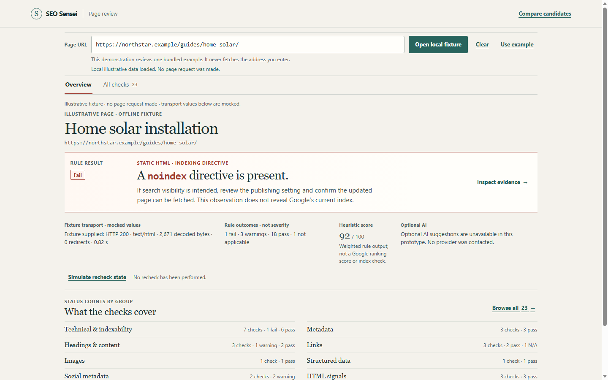
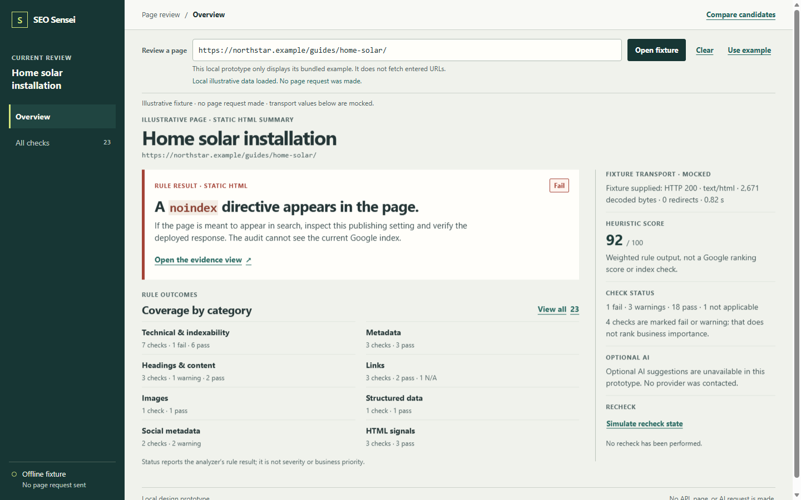

A
EDITORIAL INSPECTION
Evidence Ledger
A compact, rule-led page for reading observations and their limits without a dashboard frame.
Open Evidence Ledger

Design review · two focused candidates
PHASE 1B · COMPARISON
Both prototypes use the same local 23-check audit. The page is fictional, the transport values are mocked, and no URL or AI service is contacted.
EDITORIAL INSPECTION
A compact, rule-led page for reading observations and their limits without a dashboard frame.
Open Evidence Ledger
CONTEXTUAL INVESTIGATION
A persistent navigation rail and a split inspector keep page context beside the current evidence.
Open Trace Studio